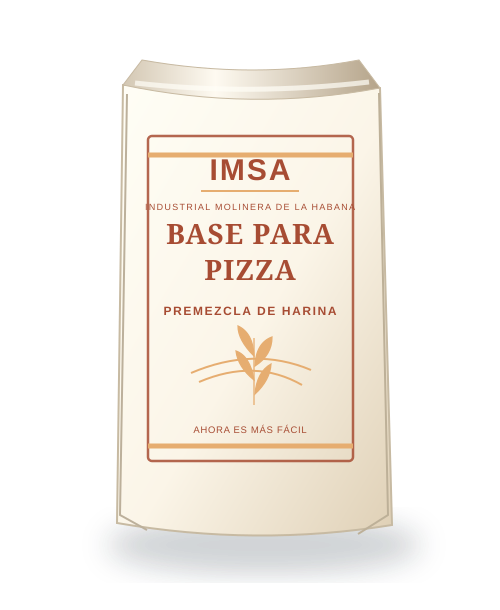
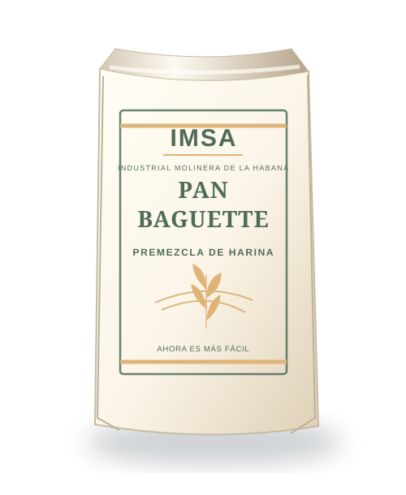
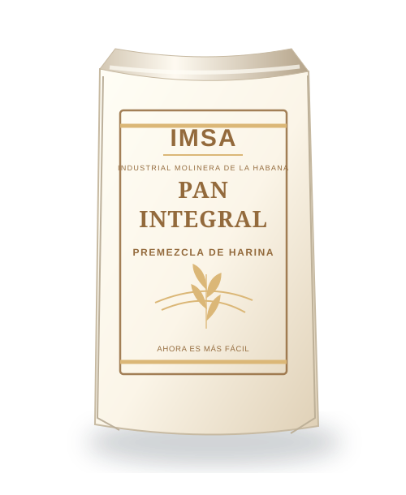
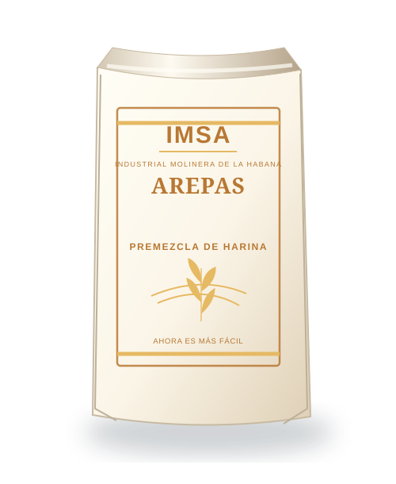

01 / 07
Harina de trigo
Flor de La Habana
Harina de media fuerza, versátil para panificación, galletas y repostería.
1 · 5 · 10 · 50 kg
Conoce las líneas de harina de trigo, premezclas y sémola con las que IMSA acompaña distintas preparaciones.
Descubre nuestras marcas y líneas de producto. Las presentaciones indicadas corresponden a la información publicada por la empresa y deben confirmarse antes de su difusión definitiva.
Harina de media fuerza, versátil para panificación, galletas y repostería.

Pensada para elaborar panes que requieren buen desarrollo de la masa.

Sémola de trigo para la producción de pastas alimenticias.

Una solución práctica para preparar bases de pizza en diferentes ocasiones.

Diseñada para facilitar la preparación de baguettes artesanales.

Para preparar panes de estilo integral de manera sencilla.

Una mezcla práctica para llevar las arepas a la mesa.